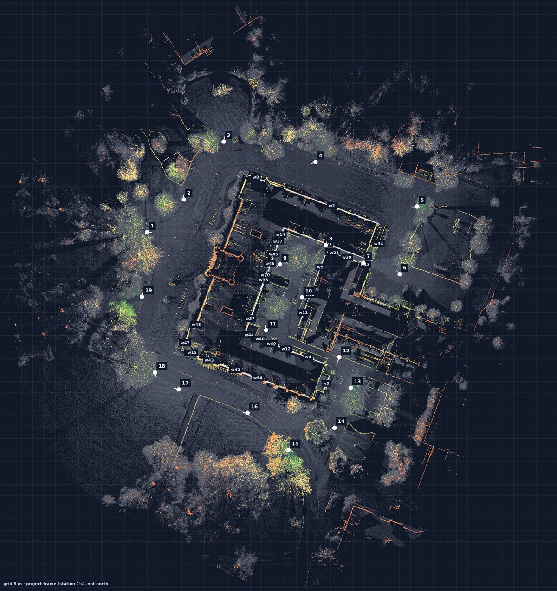
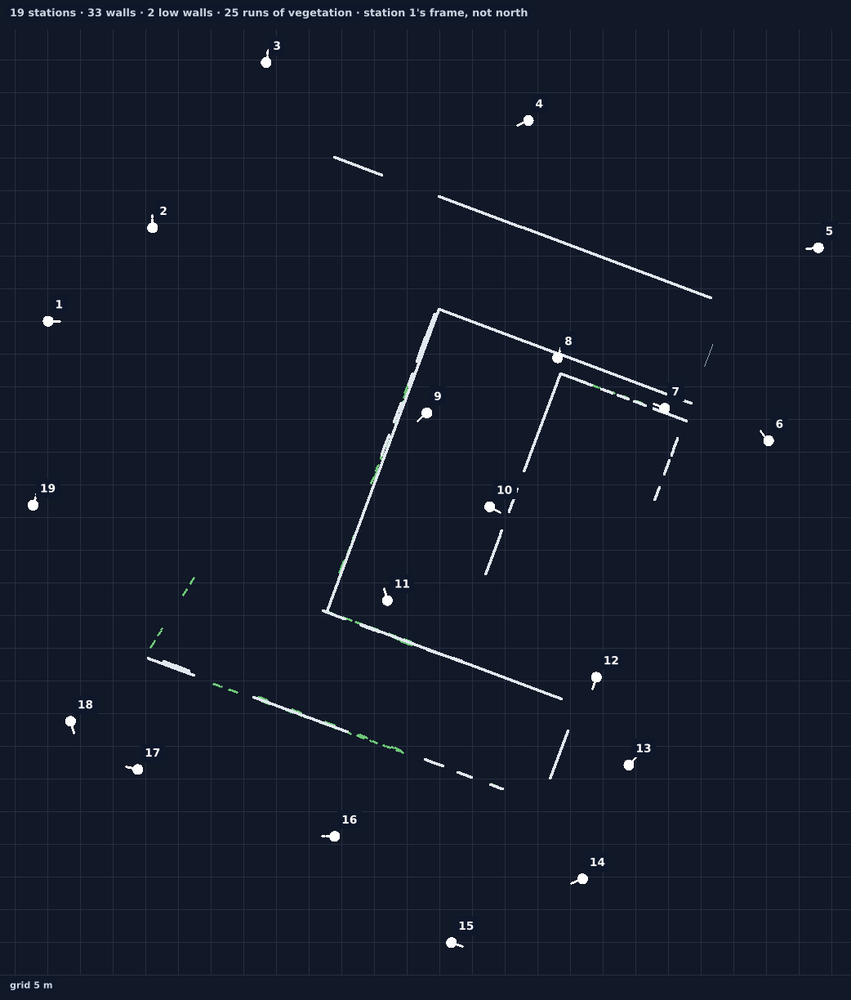
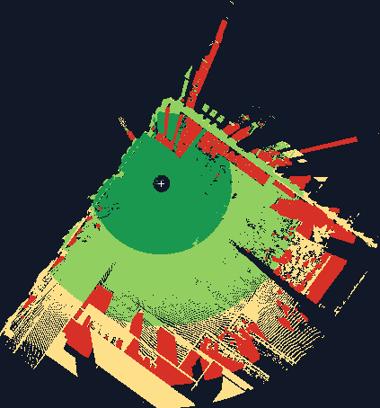

Ready
Document a whole site in one registered frame, with a live map as you go
Each station is placed with the others the moment it lands, checked by independent tests, and drawn on a map the agent and the person can both see. By the time you leave, the site is already one point cloud. For the demonstration, we scanned the administration building at the University of Idaho.
1 · A real result


19 of 19stations placed and confirmed
22 mmthe most any two overlapping stations disagree
9 of 9planted wrong placements caught by the audit
~47 sto place a station on the controller in the field

2 · What you receive
- The registered stations as point clouds (PLY, LAS or COPC), each with its verdict: confirmed, single, doubtful, grouped.
- The plan view and the minimap, a coverage picture per station, and the field log of who scanned what and when.
- The mission ledger: the person's goal, each target (a facade, a window) and whether it was covered, measured or declined, signed off once.
3 · What it takes on site
- One person with the scanner on a tripod, and a laptop with the agent. A controller on the tripod runs the scanner software. A Raspberry Pi works.
- The person says yes once per visit; the agent asks for each scan, checks it, and suggests the next station with a picture.
- Each new station needs to share walls with the ones before it; the agent says when one doesn't, before you move on.
4 · How sure
- Checked against itself, with planted errors. Every placement is tested by fresh fits, free space, surfaces and the ground; a bench replays the site in other station orders and with planted errors, and counts every mistake.
- Known weak spot: symmetric buildings. In one shuffled order of this site, two stations were trusted while turned 90°. In the real order, everything placed correctly.
- Local frame. Coordinates are the first station's, not north or site coordinates, until control points are added.